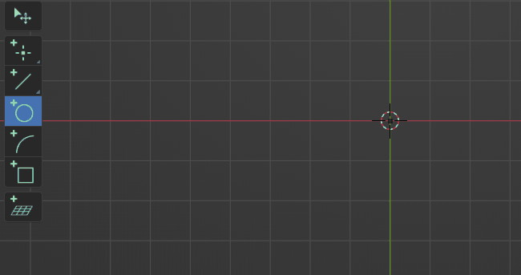

Interaction system
The focus of the extension lies on different aspects than blender itself. Extension tools usually work on one specific entity or between a few entities where the order of selection matters. As the existing system of selection isn't ideal in this context the extension defines a generic interaction system which allows for a powerful and flexible workflow.
Stateful Operations
Most tools in the extension are implemented as stateful tools. In this context a state represents one target like a selection or a value. When running a tool you will iterate through these states until all states have valid input.
Let's take the "Add Circle" tool as an example. Since a circle is represented by its center and radius the tool will have two states. One to define the center element and one to set the radius.
State Types
A state can have two different kind of targets:
- Pointer
A pointer target is best described as a selection. Pointer states will prompt the user to select an element of the according type.
- Property
A property target simply represents a value of some kind like an integer or a float or a set of values to represent something like a location.
 A state can however define both of those targets. In that case the property will be used to create a new element to satisfy the pointer target. This is often used to be able to place a new point at the mouse location when nothing is hovered but pick an existing point if one is hovered.
Selection vs Action
To be as flexible as possible the interaction system allows to work in different paradigms which can also be freely mixed. Those are:
-
Select -> Invoke Operation (The standard way to work in blender)
-
Invoke Operation -> Select
-
Partial Select -> Invoke Operation -> Select rest (Or set Parameters)
{kind=link}
{kind=link}
{kind=link}
Numerical Edit
In order to precisely edit a states property, it's possible to edit values directly by entering numbers. When the stateproperty is a set of multiple values (e.g. XYZ Location) they will be treated as sub-states, meaning you can iterate (TAB) through them and enter values sequentially.
Description
When learning how a new tool works it's best to take a look at its tooltip, this will list the different states of the tool. For pointer states this will additionally display the accepted types that can be picked.
{kind=link}
{kind=link}
While running an operation the statusbar will display that information for the currently active state.
{kind=link}
Immediate Execution
Most tools support immediate execution which will invoke the tools operations when switching to it and a valid selection is given.
Note that the execution is only triggered when a tool is invoked by its shortcut.
{kind=link}